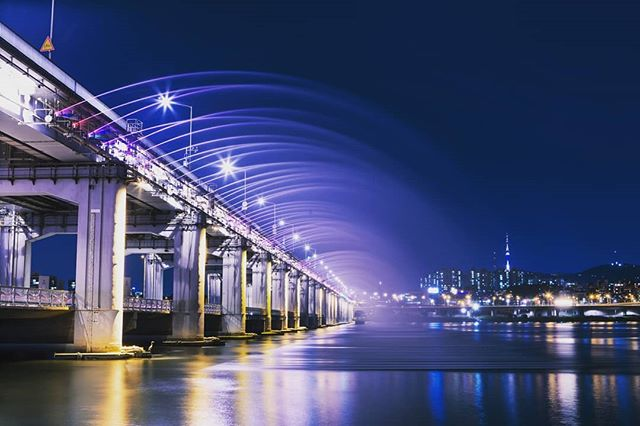
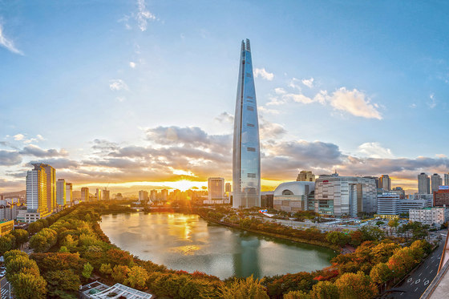

If you are in Seoul, the Han River is a must-see place. This popular and beautiful attractions
offers grass areas to lounge, stunning views of the water and city, and overall creates a relaxing
atmosphere that is truly one of a kind.

Lotte World Tower
The Lotte World Tower will provide you with a unforgettable view of the city of Seoul. The tower
stands at 1,821 ft and is the 5th tallest building in the world. Once you get to the top floor, your
eyes won't be able to leave the view!

Gyeongbokgung Palace
The Gyeongbokgung Palace is a gorgeous site that emphasizes the beauty of traditional Korean culture
and architect. The palace was built in 1395 during the Joseon dynasty and is the first and largest
palace that was built during that dynasty. If you value historical sites, this is something to add to
your list!